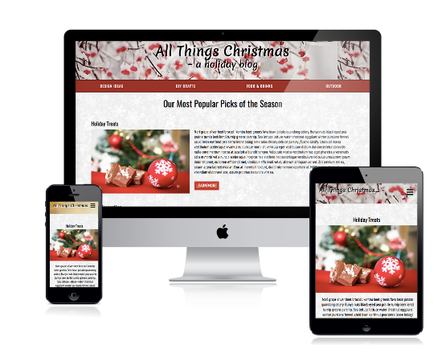

Client Project- Bella Coastal Events
Redesign of Existing Website
Toolkit: WordPress PHP SASS GIT HTML5 CSS3 Adobe Photoshop Adobe Illustrator Balsamiq
This project required us to work with an external client on the redesign of her website. Bella Coastal Events is a greater Vancouver event planning business specializing in Wedding, Corporate and Social Events. The project involved working with two other team members to redesign the website using WordPress, with the goal to increase the traffic to the site.
This project required us to work with an external client on the redesign of her website. Bella Coastal Events is a greater Vancouver event planning business specializing in Wedding, Corporate and Social Events. The project involved working with two other team members to redesign the website using WordPress, with the goal to increase the traffic to the site.